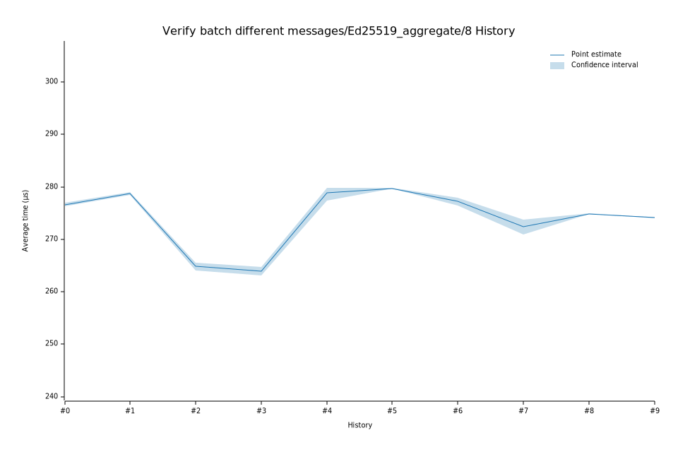

# 42023-02-09T12:49:55Z
|
Lower Bound |
Estimate |
Upper Bound |
| Value: |
277.44µs |
278.85µs |
279.76µs |
| Change in Value: |
+4.7009% |
+5.1789% |
+5.6330% |
No change in performance detected.
# 32023-02-08T18:57:54Z
|
Lower Bound |
Estimate |
Upper Bound |
| Value: |
263.13µs |
263.89µs |
264.79µs |
| Change in Value: |
-0.5937% |
-0.2292% |
+0.1791% |
Change within noise threshold.
# 22022-12-05T08:46:20Z
|
Lower Bound |
Estimate |
Upper Bound |
| Value: |
264.11µs |
264.80µs |
265.56µs |
| Change in Value: |
-5.3591% |
-5.1147% |
-4.8806% |
No change in performance detected.
# 12022-11-14T11:59:13Z
|
Lower Bound |
Estimate |
Upper Bound |
| Value: |
278.50µs |
278.73µs |
278.96µs |
| Change in Value: |
+0.4020% |
+0.5657% |
+0.7338% |
No change in performance detected.
# 02022-11-04T13:37:32Z
|
Lower Bound |
Estimate |
Upper Bound |
| Value: |
276.26µs |
276.62µs |
277.00µs |